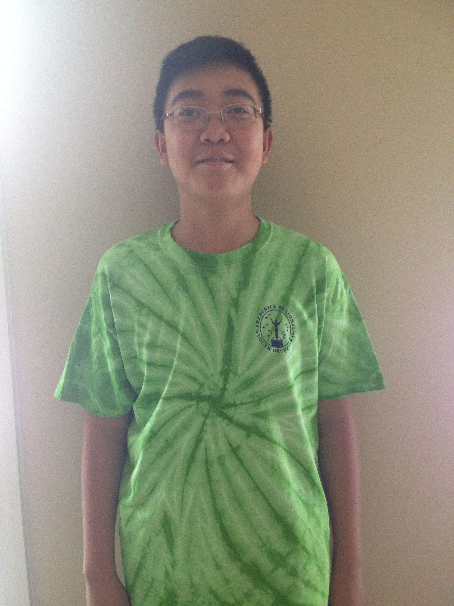
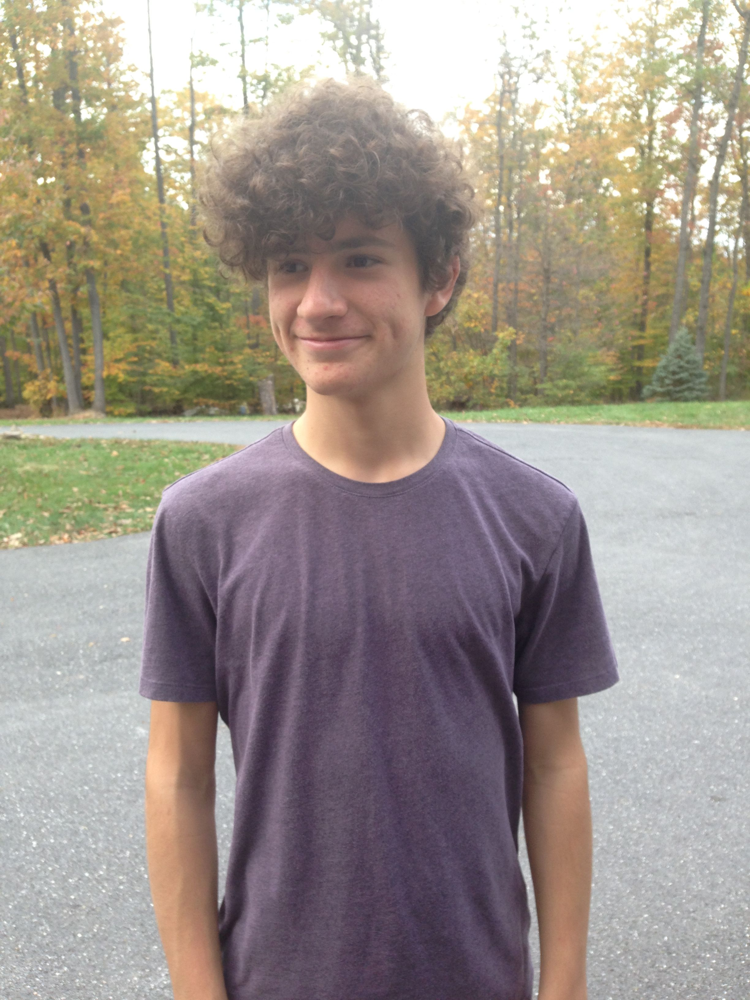
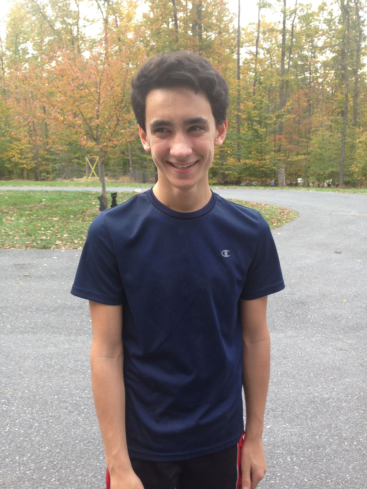
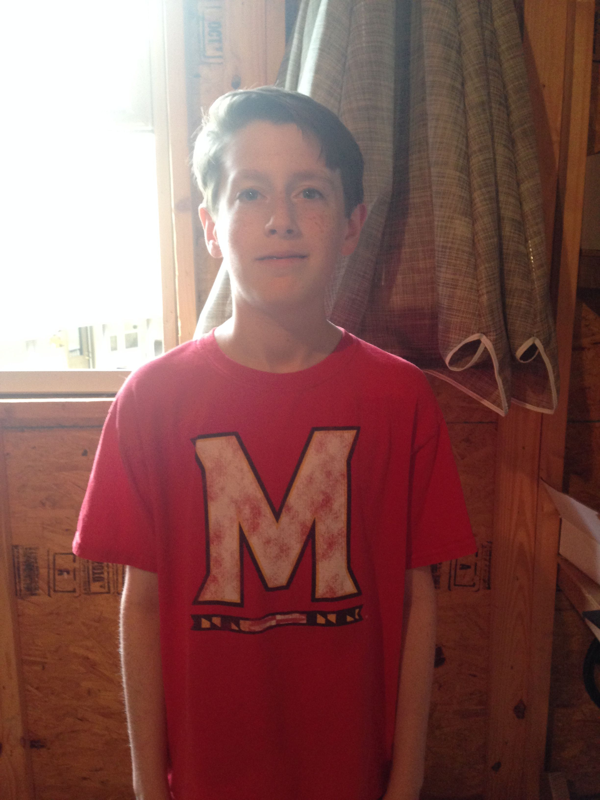
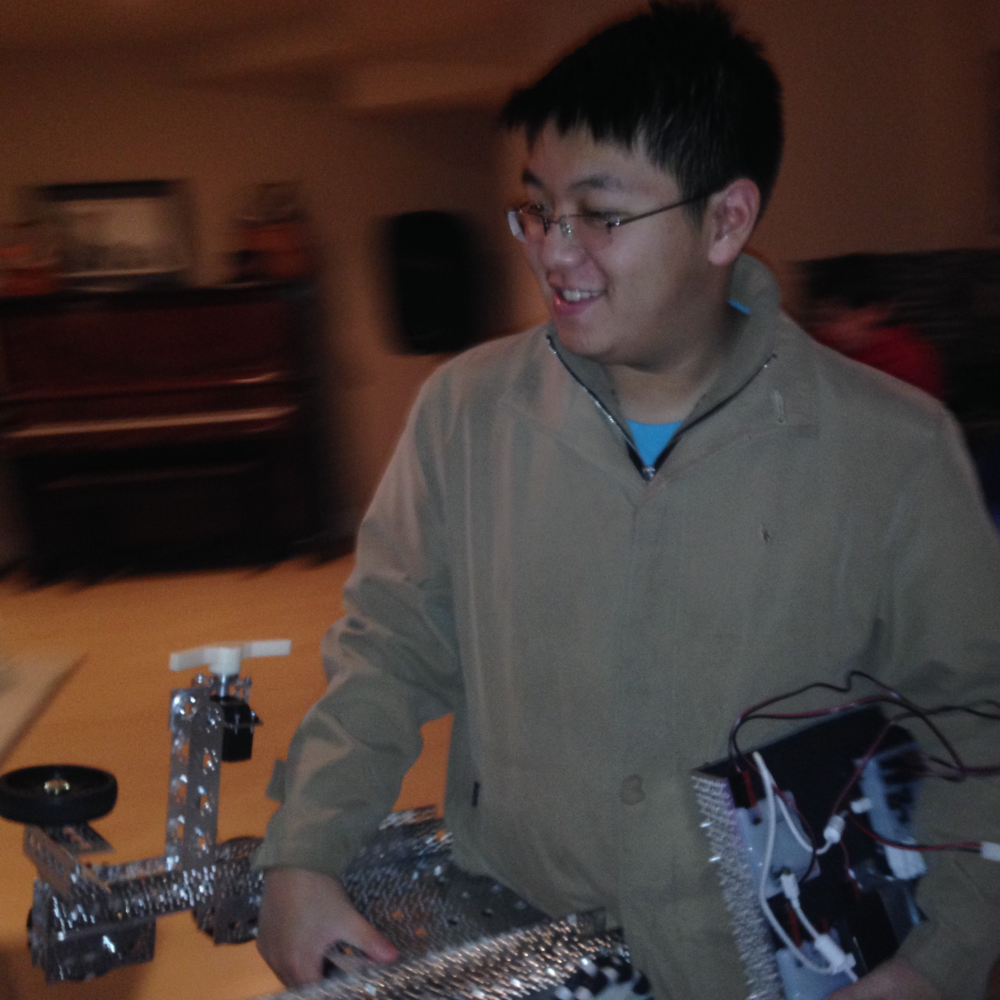

I’m Simon Mahns, I am a 17 year old junior at Urbana High School. I am a part of the Science Olympiad, Science Bowl, Math Competition team, Debate team, and some other fun and interesting clubs. I also am part of Urbana High school’s Cross Country team, wrestling team, and Outdoor track team. I am the captain of The Mandelbots and its founder. I founded the team simply because of my love of robotics. It is something I have always loved from a young age. I have participated in FLL three times and in my third and final season of FLL, my team (that I founded) placed at the world festival. I also have participated in multiple seasons of VEX. This will be my first year of FTC; I started a team in Anchorage, Alaska, my hometown, but I moved to Maryland right as we started building the robot so I was not able to compete (the team “fire Island Robotics” got to Super-regionals). I intend to follow a career path in either astrophysics or biomedical engineering. I believe that this team is destined to succeed.
I’m Simon Mahns, I am a 17 year old junior at Urbana High School. I am a part of the Science Olympiad, Science Bowl, Math Competition team, Debate team, and some other fun and interesting clubs. I also am part of Urbana High school’s Cross Country team, wrestling team, and Outdoor track team. I am the captain of The Mandelbots and its founder. I founded the team simply because of my love of robotics. It is something I have always loved from a young age. I have participated in FLL three times and in my third and final season of FLL, my team (that I founded) placed at the world festival. I also have participated in multiple seasons of VEX. This will be my first year of FTC; I started a team in Anchorage, Alaska, my hometown, but I moved to Maryland right as we started building the robot so I was not able to compete (the team “fire Island Robotics” got to Super-regionals). I intend to follow a career path in either astrophysics or biomedical engineering. I believe that this team is destined to succeed.
 Hello, my name is Jude and I am a 14 year old freshman at Urbana High School. I am part of the school’s Academic Team, Red Cross, Interact (Rotary), and the Speech/Debate Club. I am currently a builder on the team as well as the main photographer. I joined the club because I have a passion for learning computer programming languages and skills, other STEM-oriented activities, and I participated in a FIRST Lego League (FLL) tournament in 2015. I would like to become a Computer Forensic Engineer. I also have an interest in civil aviation.
Hello, my name is Jude and I am a 14 year old freshman at Urbana High School. I am part of the school’s Academic Team, Red Cross, Interact (Rotary), and the Speech/Debate Club. I am currently a builder on the team as well as the main photographer. I joined the club because I have a passion for learning computer programming languages and skills, other STEM-oriented activities, and I participated in a FIRST Lego League (FLL) tournament in 2015. I would like to become a Computer Forensic Engineer. I also have an interest in civil aviation.
My name is Alex Chen. I am a freshman at Urbana High School. Currently, I am playing hockey and am in the FBLA and Math Competition clubs. I am the concertmaster of the Frederick Regional Youth Orchestra. I have been accepted into the state orchestra for two years in a row. Robotics provides me with the opportunity to work on a sophisticated robot, which is a challenge I’d like to face. I have already had some Java and Python programming skills and experience, with which I hope to implement on our project. I hope to nurture passions in Robotic Engineering and I hope I can make my contribution to the robotic industry in the future when I grow up.
 I’m Nick Pinto, aged 15 years old in my sophomore year. Other than robotics, I’m involved in Science Olympiad. I play the piano and violin with about 10 and 4 years of experience, respectively. On the robotics team, I help with programming and the general strategy. I’m most interested in the physics side of the competition as I’m hoping to major in physics once I reach professional studies. I have competed in the First Tech Challenge once before, in Seventh Grade. I hope to place very well this year and I believe with innovative solutions and ingenuity, our team can soar above the rest.
I’m Nick Pinto, aged 15 years old in my sophomore year. Other than robotics, I’m involved in Science Olympiad. I play the piano and violin with about 10 and 4 years of experience, respectively. On the robotics team, I help with programming and the general strategy. I’m most interested in the physics side of the competition as I’m hoping to major in physics once I reach professional studies. I have competed in the First Tech Challenge once before, in Seventh Grade. I hope to place very well this year and I believe with innovative solutions and ingenuity, our team can soar above the rest.
 My name is Viktor Murray, I'm a sophomore at Urbana High School. I play cello in my school’s orchestra, and I am section leader in the Frederick Regional Youth Orchestra. I'm interested in robotics because it lets me use my problem solving skills to create solutions for various challenges. I was on the middle school FTC team for one year during the 2013-14 season, so I hope that this team has better success than the middle school team did. In the future I plan on getting a degree in computer engineering and becoming a computer hardware engineer.
My name is Viktor Murray, I'm a sophomore at Urbana High School. I play cello in my school’s orchestra, and I am section leader in the Frederick Regional Youth Orchestra. I'm interested in robotics because it lets me use my problem solving skills to create solutions for various challenges. I was on the middle school FTC team for one year during the 2013-14 season, so I hope that this team has better success than the middle school team did. In the future I plan on getting a degree in computer engineering and becoming a computer hardware engineer.
Hello, my name is Jørgen Miller. I am a freshman at Urbana High School. I play frisbee, ride horses, and play in orchestras. I am part of Science Olympiad, Frisbee Club, and Robotics Club. I play the violin, ukulele, guitar, bass, and some piano. On this team, I am the quality control / organizer person. I am interested in building and engineering anything and one day I want to custom build robots for people. Also, I have curly hair.
My name is Charlie Giglio and I am a member of the FTC Mandelbots Team. I am currently 14 years old and a Freshman at Urbana High School. I am currently also part of the UMS Maryland Science Olympiad Team at Urbana High School and I am in Boy Scouts. What interests me about STEM is the experience you gain from competing and doing these events like FTC. I have been on the Urbana MSO team since I was in the 6th grade and I have done science fair since the 3rd grade. My dream job is to become a Biomedical Engineer. Finally, a cool fact about me is that my favorite color is blue.
My name is Michael Sheets and I am a member of the FTC Mandelbots Team. I am currently 14 years old and a freshman at Urbana High School. I am also part of the UHS marching band and I play clarinet. I am interested into how something is conceptualized mathematically before it is built. I have played sports all my life including baseball, basketball, and lacrosse. I have recently been getting into technology and the arts. I want to be an architect when I grow up. A cool fact about me is that my clarinet's Asian-Name is Rice-Paddy
My name is Jessica and I am a freshman at Urbana High. Outside of school, I play piano, violin, and tennis. I joined robotics because I had an interest for STEM. I have had minimal experience in programming. In the future, I may look into pursuing a career as a biomedical engineer. A cool fact about me is that I am the only female on the team.
I’m Jason Tan, and a senior at Urbana High. I participate in this FTC team, and also do theatre and programming besides all the IB classes. I'm in this for the experience of robot building. I aim to be a software engineer eventually, so this is pretty interesting to see the hardware side of things. I'm the only senior on the team, and so I've found that it is also a lesson in tolerance, surprisingly enough. I'm trying to make sure that this team continues well after I leave. Best wishes to Simon and his venture.
My name is Josh Yu and am in my sophomore year at Urbana High School. I’ve competed in the FTC robotics league for two years and the FLL league for 1 year, where my team, Brickstorm, placed in regional competition. I now joined the Mandelbots seeking redemption for an abysmal year of FTC Middle School Robotics. Outside of robotics, I’m in Science Olympiad, the marching band, model UN, and National Math Honor society. I have performed with the All-County band for 3 years and the All-State band for 1. I plan to pursue a career in mechanical or electrical engineering
My name is Haoran Diao, as of 2016 I am a highschool sophmore. I’m an electronics hobbyist and outside of robotics I am in Debate club. I am the team lead programmer and maintainer of this website. In the future I plan to be an electronics engineer, though would be content with any electronics related job that would allow a roughly middle class standard of living. Richard Matthew Stallman is my spiritual leader.
 My name is Ezeki Ganesan. I’m the spokesperson of the team and co-head of programming. I’ve had robotics experience since the third grade and programming experience since the freshman year. My hobbies beside robotics are percussive arts and gaming.
My name is Ezeki Ganesan. I’m the spokesperson of the team and co-head of programming. I’ve had robotics experience since the third grade and programming experience since the freshman year. My hobbies beside robotics are percussive arts and gaming.